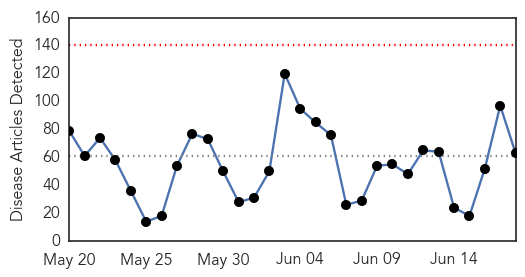
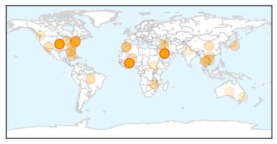
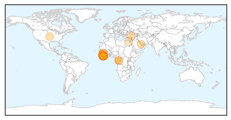

Unknown
30-Day Web Trend
0 alerts, 0 warnings

30-Day Twitter Trend
0 alerts, 0 warnings

Article Locations
Article Confidences

Top Articles:
- 0.999
- WHO says MERS virus of concern before haj, surge abating
- 0.997
- MERS cases in decline, vigilance urged for Hajj: WHO
- 0.992
- In U.S., MERS patients did not spread infection to close contacts: CDC
- 0.963
- WHO warns of Mideast virus threat to pilgrims
- 0.960
- MERS spread feared with pilgrims to Saudi Arab
- 0.946
- MERS: WHO warns of threat to Haj pilgrims
- 0.943
- Morocco advises against hajj due to MERS threat
- 0.937
- UPDATE 1-U.S. government confident new vaccine will help fight pig virus
- 0.935
- Morocco advises against hajj due to MERS threat
- 0.928
- Morocco Advises Against Hajj Due to MERS Threat
- 0.928
- Morocco Advises against Hajj Due to MERS Threat — Naharnet
- 0.917
- Chicago Tribune
- 0.917
- Chicago Tribune
- 0.917
- Chicago Tribune
- 0.917
- Chicago Tribune
- 0.917
- Chicago Tribune
- 0.917
- Chicago Tribune
- 0.917
- Chicago Tribune
- 0.917
- Chicago Tribune
- 0.917
- Chicago Tribune
- 0.917
- Chicago Tribune
- 0.917
- Chicago Tribune
- 0.916
- Over 500 die from malaria
- 0.910
- The world windows to Thailand
- 0.910
- The world windows to Thailand
- 0.900
- Litchi virus causing acute encephalitis syndrome?
- 0.892
- Morocco advises against hajj due to MERS threat
- 0.890
- Morocco advises against hajj due to MERS threat
- 0.889
- Thousands of Lyme disease tests unproven and possibly inaccurate, NECIR reports
- 0.874
- U.S. Approved Vaccine to Fight Pig Virus
- 0.866
- Iraq minister says asks for U.S. air strike -Al-Arabiya TV
- 0.866
- Turkey's top court says coup plot convictions violated army officers' rights
- 0.866
- Iraq PM calls for tribes to renounce "killers"
- 0.866
- Ukraine's Poroshenko proposes envoy to Germany as foreign minister
- 0.866
- Situation in Iraq shows signs of 'civil war' -Saudi foreign minister
- 0.866
- EU-bound Russian gas flows from Ukraine normal
- 0.861
- When ignorance of disease is bliss
- 0.829
- UPDATE 1-U.S. government confident new vaccine will help fight pig virus
- 0.828
- U.S. government confident new vaccine will help fight pig virus
- 0.802
- US government confident new vaccine will help fight pig virus
- 0.789
- Wash your hands! Indianapolis sees increase in stomach bug
- 0.789
- Algeria reports first MERS death
- 0.779
- B.C. needs to move ahead on Lyme disease
- 0.773
- Epidemiological and clinical characteristics of children who died from hand, foot and mouth disease in Vietnam, 2011
- 0.758
- 7 hospitalised due to mushroom poisoning
- 0.707
- U.S. government confident new vaccine will help fight pig virus
- 0.707
- U.S. government confident new vaccine will help fight pig virus
- 0.691
- Senator LaValle Releases Task Force Report of Lyme and Tick-Born Diseases
- 0.675
- The HPV Vaccination in Japan: Issues and Options
- 0.657
- Lyme disease action needed, Senate urges Health Department
Showing top 50 articles...
Top Tweets:
-
No tweets found for Jun 18, 2014
Ebola
30-Day Web Trend
7 alerts, 0 warnings

30-Day Twitter Trend
1 alerts, 0 warnings

Article Locations
Article Confidences

Top Articles:
- 1.000
- Liberia Works to Contain New Ebola Outbreak Amid Renewed Fear
- 1.000
- West Africa Ebola death toll hits 337, reports WHO
- 1.000
- Doctors Aren't Sure How To Stop Africa's Deadliest Ebola Outbreak : Shots
- 1.000
- Death toll from Ebola outbreak in West Africa reaches 337
- 1.000
- Ebola Deaths Pass 300 In West Africa
- 1.000
- Ebola deaths pass 300 in West Africa
- 1.000
- Alaska Public Media
- 1.000
- Ebola resurfaces in Liberia - News
- 1.000
- Doctors Aren't Sure How To Stop Africa's Deadliest Ebola Outbreak
- 0.999
- Ebola Virus Records 337 deaths in West Africa-WHO
- 0.999
- الاخبار المصورة
- 0.999
- What Happens to Your Body When You Get Ebola?
- 0.999
- Liberian official: 7 more deaths linked to Ebola
- 0.999
- UPDATE 2-Death toll from West Africa Ebola hits 337 -WHO
- 0.998
- Death toll from West Africa Ebola hits 337 -WHO update
- 0.997
- UPDATE 2-West Africa Ebola outbreak spreads to Liberia's capital, four dead
- 0.992
- Ebola: Sirleaf consoles hospital staff on death of colleague - News
- 0.986
- Ebola deaths on rise in Sierra Leone
- 0.930
- President Sirleaf sympathises with Ebola victim
- 0.773
- Briefs: Egypt hunger strike ends in freedom
- 0.743
- Health Minister Miatta Kargbo Mocks Nurse who died of Ebola
Top Tweets:
- 0.689
- Ebola W Africa sharp increase. Between WHO figs published June 10 & 17, 98 more recorded deaths. Total cumulative deaths since March - 337